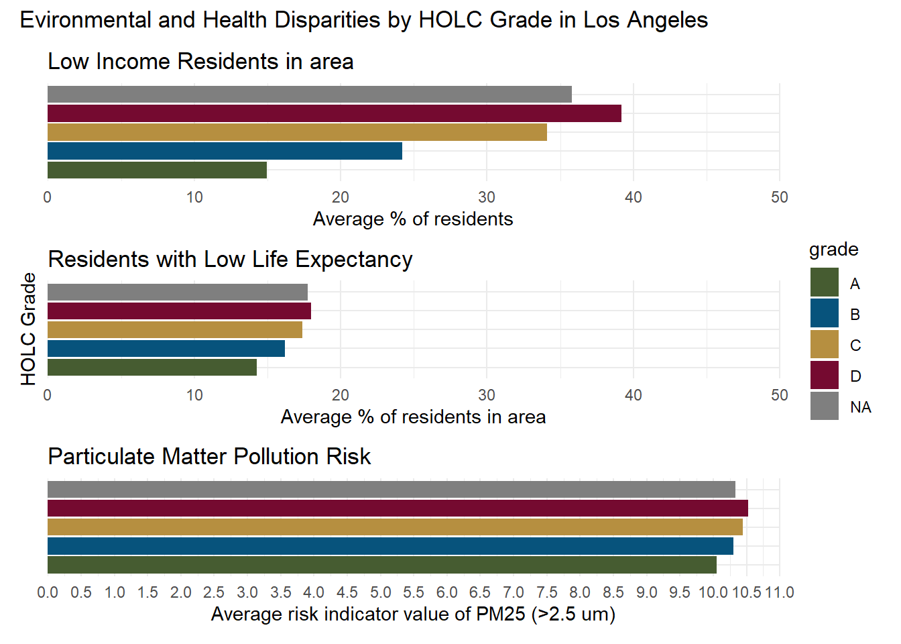

# Read in necessary libraries
library(tidyverse)
library(sf)
library(here)
library(tmap)EDS 223: Homework 2
Setup Code
- Loading necessary libraries
- Importing data
# Load in data
ejscreen <- read_sf(here::here("data", "ejscreen" , "EJSCREEN_2023_BG_StatePct_with_AS_CNMI_GU_VI.gdb"))
redline <- read_sf(here::here("data", "mapping-inequality", "mapping-inequality-los-angeles.json")) %>%
st_make_valid() # Validate polygons
gbif <- read_sf(here::here("data", "gbif-birds-LA", "gbif-birds-LA.shp"))Check class of data
# Check class of each object
class(ejscreen)[1] "sf" "tbl_df" "tbl" "data.frame"class(redline)[1] "sf" "tbl_df" "tbl" "data.frame"class(gbif)[1] "sf" "tbl_df" "tbl" "data.frame"Check crs of each dataframe
st_crs(ejscreen)Coordinate Reference System:
User input: WGS 84 / Pseudo-Mercator
wkt:
PROJCRS["WGS 84 / Pseudo-Mercator",
BASEGEOGCRS["WGS 84",
ENSEMBLE["World Geodetic System 1984 ensemble",
MEMBER["World Geodetic System 1984 (Transit)"],
MEMBER["World Geodetic System 1984 (G730)"],
MEMBER["World Geodetic System 1984 (G873)"],
MEMBER["World Geodetic System 1984 (G1150)"],
MEMBER["World Geodetic System 1984 (G1674)"],
MEMBER["World Geodetic System 1984 (G1762)"],
MEMBER["World Geodetic System 1984 (G2139)"],
MEMBER["World Geodetic System 1984 (G2296)"],
ELLIPSOID["WGS 84",6378137,298.257223563,
LENGTHUNIT["metre",1]],
ENSEMBLEACCURACY[2.0]],
PRIMEM["Greenwich",0,
ANGLEUNIT["degree",0.0174532925199433]],
ID["EPSG",4326]],
CONVERSION["Popular Visualisation Pseudo-Mercator",
METHOD["Popular Visualisation Pseudo Mercator",
ID["EPSG",1024]],
PARAMETER["Latitude of natural origin",0,
ANGLEUNIT["degree",0.0174532925199433],
ID["EPSG",8801]],
PARAMETER["Longitude of natural origin",0,
ANGLEUNIT["degree",0.0174532925199433],
ID["EPSG",8802]],
PARAMETER["False easting",0,
LENGTHUNIT["metre",1],
ID["EPSG",8806]],
PARAMETER["False northing",0,
LENGTHUNIT["metre",1],
ID["EPSG",8807]]],
CS[Cartesian,2],
AXIS["easting (X)",east,
ORDER[1],
LENGTHUNIT["metre",1]],
AXIS["northing (Y)",north,
ORDER[2],
LENGTHUNIT["metre",1]],
USAGE[
SCOPE["Web mapping and visualisation."],
AREA["World between 85.06°S and 85.06°N."],
BBOX[-85.06,-180,85.06,180]],
ID["EPSG",3857]]st_crs(redline)Coordinate Reference System:
User input: WGS 84
wkt:
GEOGCRS["WGS 84",
DATUM["World Geodetic System 1984",
ELLIPSOID["WGS 84",6378137,298.257223563,
LENGTHUNIT["metre",1]]],
PRIMEM["Greenwich",0,
ANGLEUNIT["degree",0.0174532925199433]],
CS[ellipsoidal,2],
AXIS["geodetic latitude (Lat)",north,
ORDER[1],
ANGLEUNIT["degree",0.0174532925199433]],
AXIS["geodetic longitude (Lon)",east,
ORDER[2],
ANGLEUNIT["degree",0.0174532925199433]],
ID["EPSG",4326]]st_crs(gbif)Coordinate Reference System:
User input: WGS 84
wkt:
GEOGCRS["WGS 84",
DATUM["World Geodetic System 1984",
ELLIPSOID["WGS 84",6378137,298.257223563,
LENGTHUNIT["metre",1]]],
PRIMEM["Greenwich",0,
ANGLEUNIT["degree",0.0174532925199433]],
CS[ellipsoidal,2],
AXIS["latitude",north,
ORDER[1],
ANGLEUNIT["degree",0.0174532925199433]],
AXIS["longitude",east,
ORDER[2],
ANGLEUNIT["degree",0.0174532925199433]],
ID["EPSG",4326]]Compare crs between each
st_crs(ejscreen) == st_crs(redline)[1] FALSEst_crs(ejscreen) == st_crs(gbif) [1] FALSEst_crs(gbif) == st_crs(redline)[1] TRUEMatch ejscreen to gbif and redline
unique(st_is_valid(ejscreen))[1] TRUE FALSEunique(st_is_valid(redline))[1] TRUEunique(st_is_valid(gbif))[1] TRUEejscreen <- st_transform(ejscreen, crs = st_crs(redline))Part 1: Legacy of redlining in current environmental (in)justice
# Create map of LA by HOLC grade
tm_shape(redline) + # Use redline data
tm_polygons( # Fill with polygons
fill.scale = tm_scale(values = c("#7CAF5F", # Colors
"#5BA1C6",
"#EDD769",
"#951E00")),
fill = 'grade', # Fill by 'grade' column
fill.legend = tm_legend(title = "HOLC grade"), # Add title
fill_alpha = 0.5 # Make basemap visible under fill layer
) +
tm_basemap("OpenStreetMap") + # Use streetmap data
tm_title("Historic Home Owners’ Loan Corporation (HOLC) Grades in Los Angeles") + # Set map title
tm_scalebar(text.size = 0.5) + # Set scalebar size
tm_compass(position = c("top", "right"), # Put compass on top right corner
text.size = 0.7) # Compass is larger
# Make a table representing the percentage of census groups within each grade
# Join datasets using geometries
la_county <- ejscreen %>%
filter(CNTY_NAME %in% c("Los Angeles County"))
redline_census <- st_join(redline, la_county) %>%
st_drop_geometry()
# OBJECTID is census block group
redline_census <- redline_census %>%
group_by(grade) %>%
summarise(census_percent = (n()/ length(redline_census$grade))*100)
knitr::kable(redline_census, col.names = c("HOLC grade", "Percent"), caption = "Percent of Los Angeles Census Blocks in each HOLC Grade")| HOLC grade | Percent |
|---|---|
| A | 7.028804 |
| B | 19.395742 |
| C | 47.871008 |
| D | 21.070758 |
| NA | 4.633688 |
Create at least two visualizations summarizing current conditions (from the EJScreen data) within HOLC grades using the mean of the following variables (you may combine variables or create separate plots): % low income percentile for Particulate Matter 2.5 percentile for low life expectancy Use ggplot for your visualizations! You will first need to calculate mean of each variable grouped by HOLC grade. Write a brief paragraph reflecting on these results Interpret the patterns you observe in your results Discuss potential relationships between historical redlining grades and current environmental/socioeconomic conditions